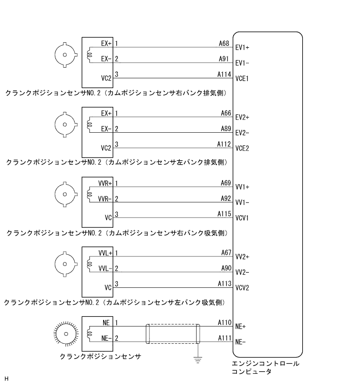
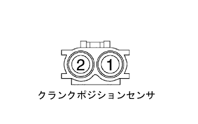
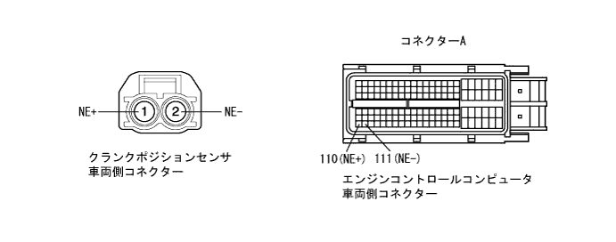

DTC P0335/13 Crank Angle Sensor Circuit |
DTC P0339/13 Crank Angle Sensor Ne Momentary Interruption |
| DTCNo. SAE/TCCS | DTC Detection Condition
| Inspection Area |
|---|---|---|
| P0335/13 |
|
|
| P0339/13 |
|
|

| Step 1 | Read TaSCAN Data (Engine Speed) |
Connect SST (TaSCAN) to DLC3.
Turn the ignition switch ON and, following the screen display of SST (TaSCAN), select [ECU Data Monitor] - [Engine Speed].
Start the engine.
Read the [Engine Speed] value while the engine is running.
| Result | Proceed to |
|---|---|
| NG | A |
| OK | B |
|
| ||||
| A | |
| Step 2 | Inspect Crankshaft Position Sensor |
 |
Resistance Inspection
Using SST (Toyota electrical tester), measure the resistance between the terminals.
| Tester Connection | Condition | Standard |
|---|---|---|
| Terminal 1 - Terminal 2 | 20°C | 1850 to 2450Ω |
|
| ||||
| OK | |
| Step 3 | Inspect Wire Harness and Connector (Engine Control Computer - Crankshaft Position Sensor) |
ReferenceDisconnect the engine control computer connector A and the crankshaft position sensor connector.
Using SST (Toyota electrical tester), measure the resistance between the terminals. (For Terminals of ECU, see)

| Tester Connection (Terminal Symbol) | Condition | Standard |
|---|---|---|
| A110(NE+) - 1(NE+) | Always | Below 1 Ω |
| A111(NE-) - 2(NE-) | Always | Below 1 Ω |
| Tester Connection (Terminal Symbol) | Condition | Standard |
|---|---|---|
| A110 (NE+) and 1 (NE+) terminals - Other terminals and body ground | Always | 10k Ω or higher |
| A111 (NE-) and 2 (NE-) terminals - Other terminals and body ground | Always | 10k Ω or higher |
|
| ||||
| OK | |
| Step 4 | Inspect Sensor Installation Area |
Check the tightening and installation condition of the crankshaft position sensor bolt.
|
| ||||
| OK | |
| Step 5 | Inspect Crankshaft |
Check the teeth of the crank angle sensor plate on the crankshaft and its installation condition.
|
| ||||
| OK | ||
| ||